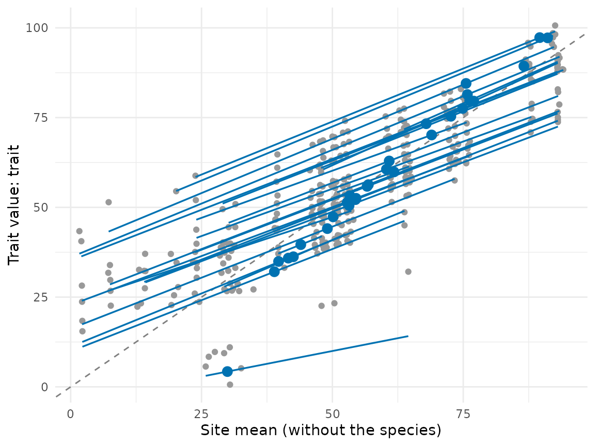
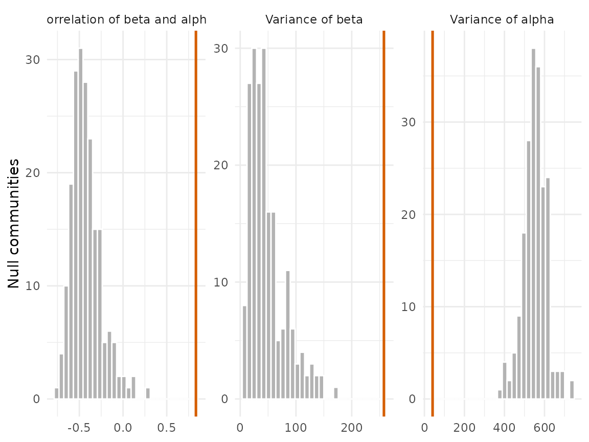

The trait-gradient analysis of Ackerly & Cornwell (2007) places each species along the gradient defined by the mean trait of the communities it lives in. The species mean \bar t_i splits into \beta_i, the mean of the communities of the species, and \alpha_i = \bar t_i - \beta_i, its difference from the species it co-occurs with. The gradient is built from the trait itself, so no environmental variable has to be chosen beforehand. \beta measures where a species sorts among communities, and \alpha measures how it differs within them.
trait_gradient() follows the original analysis with
three changes, described in its help page: site means leave out the
focal species, the weights of site means and of species means are chosen
apart, and the tests use a null model with fixed margins and a
phylogenetic model that carries the sampling error of each value. The
results below are simulated.
library(comdynamite)
set.seed(1)
tree <- treeshapesim::sim_tree_shape(30)
sim <- simulate_metacommunity(landscape_implicit(25), species_traits(tree, lambda = 1),
competition_matrix(tree, "none"), n_steps = 100,
seed_steps = 1:5)
ind <- sample_individuals(sim, n = 5, local_adaptation = 0.5, intraspecific_sd = 1)
tg <- trait_gradient(ind, abundance = "abundance")
tg
#> Trait-gradient analysis of 29 species in 25 sites
#> Site means: without the focal species | weights of sites: abundance | of species: abundance
#> Correlation of beta and alpha: 0.834
#> Variance of species means: 470
#> of beta: 258
#> of alpha: 40.9The gradient
Each grey point is a population, at the mean of its site without the species itself. Lines are the slopes of species over the range of their sites, and large points are the species means at (\beta_i, \bar t_i). Species above the dashed line have positive \alpha: they carry larger values than the species they live with.
plot(tg)
Leaving the focal species out
With the focal species inside the site means, \beta_i contains \bar t_i, and the more so the fewer species share its sites. The original \beta is pulled toward the mean of the species itself; below are the species where the two versions differ most.
original <- trait_gradient(ind, abundance = "abundance", leave_one_out = FALSE)
both <- data.frame(species = tg$species$species, mean = tg$species$mean,
beta = tg$species$beta, beta_original = original$species$beta)
head(both[order(-abs(both$beta - both$beta_original)), ])
#> species mean beta beta_original
#> 7 t16 4.261821 29.94307 9.697106
#> 13 t21 32.069204 38.91281 37.845875
#> 16 t24 97.217766 91.11292 91.942343
#> 17 t25 84.520701 75.53700 76.354633
#> 10 t19 44.084085 49.03554 48.442121
#> 18 t26 97.288470 89.60545 90.039499The raw correlation of \beta and \alpha is not readable on its own under either version, because \alpha = \bar t - \beta: read it against a null model, as below. In simulations without trait sorting, the curveball test of the correlation rejected in 49% of replicates with the original site means and in 5% with the leave-one-out means.
Weights
Abundance weights let the dominant species set the gradient.
trait_gradient_weights() runs the four combinations of
weights for sites and species and correlates them with the first.
trait_gradient_weights(ind, abundance = "abundance")$correlation
#> weights beta alpha
#> 1 abundance/abundance 1.0000000 1.0000000
#> 2 abundance/occurrence 0.8605559 0.9270340
#> 3 occurrence/abundance 0.9971254 0.9671218
#> 4 occurrence/occurrence 0.8757289 0.9458010Null models
trait_gradient_test() exchanges the trait means of
species among species and keeps the communities as observed, which tests
whether species with similar traits live in similar communities.
test <- trait_gradient_test(tg, n_null = 199)
test
#> Null model of the trait-gradient analysis: 199 communities, species
#> statistic observed null_mean null_sd ses p
#> cor_beta_alpha 0.834 -0.42 0.168 7.44 0.01
#> var_beta 258.000 48.30 32.200 6.51 0.01
#> var_alpha 40.900 553.00 58.500 -8.76 0.01
plot(test)
The curveball null moves species among sites instead, keeping the
richness of every site and the number of sites of every species. It also
breaks the turnover of species along the gradient, so its tests of the
variances reject whenever composition changes among sites; use it for
the correlation of \beta and \alpha only. The help page of
trait_gradient_test() gives the error rates of both nulls
in simulations.
trait_gradient_test(tg, n_null = 199, null = "curveball")$statistics[1, ]
#> statistic observed null_mean null_sd ses p
#> 1 cor_beta_alpha 0.833901 -0.2733103 0.2338977 4.733741 0.01When niches are conserved, a trait that merely carries the same
phylogenetic structure looks sorted along the gradient under the
exchange of means among all species. The phylogenetic permutations of
Lapointe & Garland (2001) exchange means preferably among relatives;
phylo_k closer to 1 keeps exchanges closer in the tree.
trait_gradient_test(tg, n_null = 199, null = "phylo", tree = tree)
#> Null model of the trait-gradient analysis: 199 communities, phylo
#> statistic observed null_mean null_sd ses p
#> cor_beta_alpha 0.834 -0.358 0.173 6.90 0.01
#> var_beta 258.000 70.000 44.300 4.23 0.01
#> var_alpha 40.900 528.000 67.700 -7.19 0.01Phylogeny
trait_gradient_phylo() asks whether \beta, \alpha and the species mean are conserved.
Each value has a bootstrap standard error, added to the covariance of
the model, so a species seen in few sites does not pass for fast
evolution.
ph <- trait_gradient_phylo(tg, tree, n_boot = 199)
ph
#> Phylogenetic models of the trait-gradient analysis: 26 species
#> response model mu sigma2 a half_life at_bound loglik n_par aic
#> beta white 59.800 203.0 NA NA NA -105.0 2 214
#> beta BM 60.400 379.0 NA NA NA -97.4 2 199
#> beta OU 60.400 458.0 0.506 1.37 FALSE -97.3 3 201
#> alpha white -0.809 34.7 NA NA NA -83.5 2 171
#> alpha BM -0.404 66.6 NA NA NA -75.8 2 156
#> alpha OU -0.404 66.7 0.001 NA TRUE -75.8 3 158
#> mean white 59.700 446.0 NA NA NA -114.0 2 231
#> mean BM 60.600 844.0 NA NA NA -105.0 2 215
#> mean OU 60.500 908.0 0.213 3.25 FALSE -105.0 3 217
#> delta_aic
#> 14.88
#> 0.00
#> 1.77
#> 15.26
#> 0.00
#> 2.00
#> 16.76
#> 0.00
#> 1.96In this simulation the optima evolve by Brownian motion
(lambda = 1), so \beta,
which follows the optima, should prefer Brownian motion over the model
without phylogeny. A fit of the OU process with its strength at a bound
is marked in at_bound: at the lower bound it is Brownian
motion.
A Bayesian model with latent beta
trait_gradient_phylo() first computes \beta and then models it with a standard
error. trait_gradient_bayes() instead fits in Stan one
bivariate model in which \beta and the
species mean are latent species effects, with a phylogenetic and a
non-phylogenetic part, estimated from every site of every species. The
phylogenetic share \lambda of \beta, \alpha and the mean has its own prior and
comes with a credible interval. It needs cmdstanr and many species (see
the Limits section of its help page). Abundance weights make the
posterior too narrow, so the model below uses occurrence weights for
species.
In simulations with about 40 species, \lambda of \beta near 0 and near 1 was recovered, while intermediate signal came out low with wide intervals; the help page gives the numbers.
tg_occ <- trait_gradient(ind, abundance = "abundance", species_weights = "occurrence")
bayes <- trait_gradient_bayes(tg_occ, tree, parallel_chains = 4)
bayes$diagnostics # R-hat, effective sample sizes, divergent transitions
bayes$signal
bayesplot::pp_check(bayes, resp = "sitemean")
# an OU structure with the strength fitted to beta by trait_gradient_phylo()
a <- ph$models$a[ph$models$response == "beta" & ph$models$model == "OU"]
ou <- trait_gradient_bayes(tg_occ, tree, ou_alpha = a, parallel_chains = 4)
# cross-validation one response at a time, since the two are fitted to different populations
loo::loo_compare(bayes$fit$loo(variables = "log_lik_p"), ou$fit$loo(variables = "log_lik_p"))References
Ackerly, D. D., & Cornwell, W. K. (2007). A trait-based approach to community assembly: partitioning of species trait values into within- and among-community components. Ecology Letters, 10, 135–145. https://doi.org/10.1111/j.1461-0248.2006.01006.x
Lapointe, F.-J., & Garland, T., Jr. (2001). A generalized permutation model for the analysis of cross-species data. Journal of Classification, 18, 109–127. https://doi.org/10.1007/s00357-001-0007-0
Strona, G., Nappo, D., Boccacci, F., Fattorini, S., & San-Miguel-Ayanz, J. (2014). A fast and unbiased procedure to randomize ecological binary matrices with fixed row and column totals. Nature Communications, 5, 4114. https://doi.org/10.1038/ncomms5114